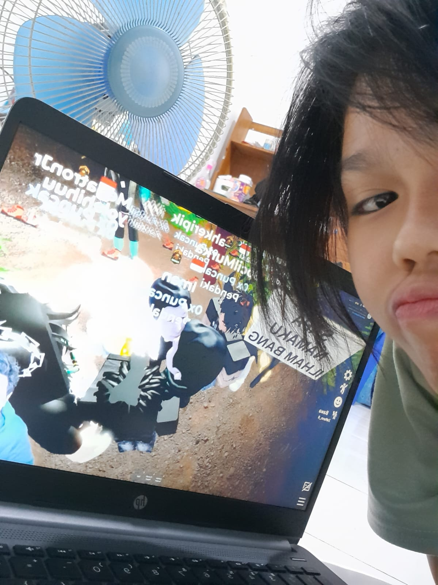

Selamat Ulang Tahun ke-18, Cindy! 🎂✨
🎈🎉🥳

Oiiii Ceee, bocil roblox yg lagi di bali! Hari ini lo genap 18 tahun kan. umur yang nandain lu tuh udah gede. Harus jadi lebih dewasa dan jangan dikit2 ngeluh. udah deket uts kan, jangan lupa belajar biar semester 1 baguss, dan semuanya lancar jaya ya!
kata kata dari gw: Mending tetep botak apa panjangin rambut yak! ??
Dari sesama bocil roblox, Si Botak 😎
🥳🥳🎊